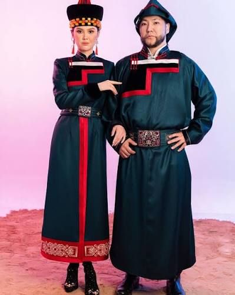
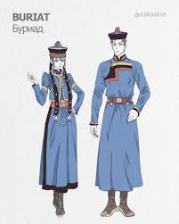
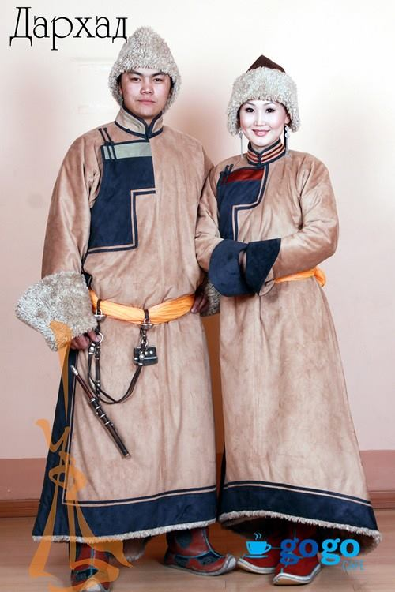
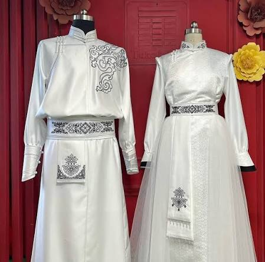
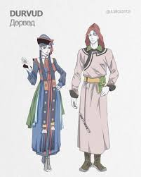
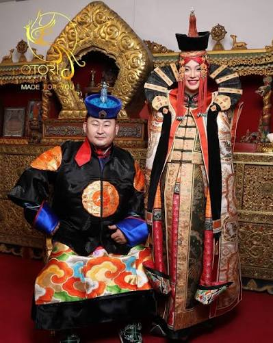
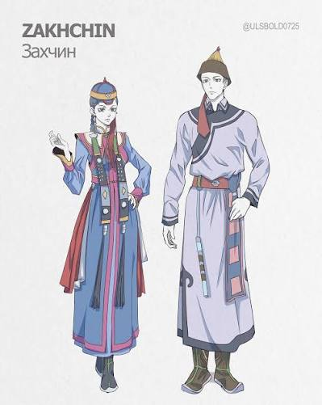

ギャラリー

ブリヤート族のデール。伝統的な装飾が特徴の衣装です。

ブリヤート地方で着用されるデールの一例です。

ダルハド族のデール。地域独自の色や模様があります。

モンゴルの伝統衣装デールの基本的なスタイルです。

ドルボド族のデール。西部地域で見られる伝統衣装です。

ハルハ族のデール。モンゴルで広く知られる代表的な型です。

ザハチン族のデール。独特なデザインを持つ民族衣装です。